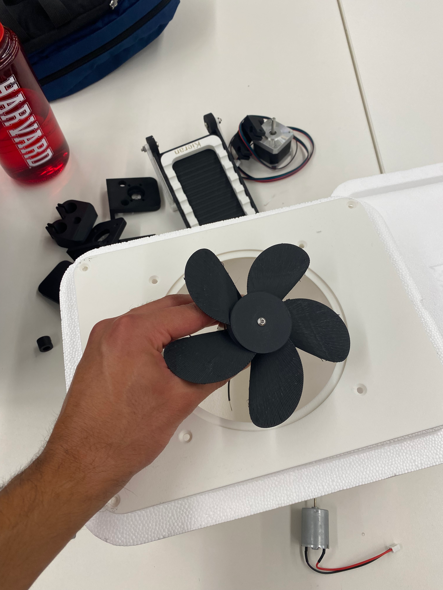
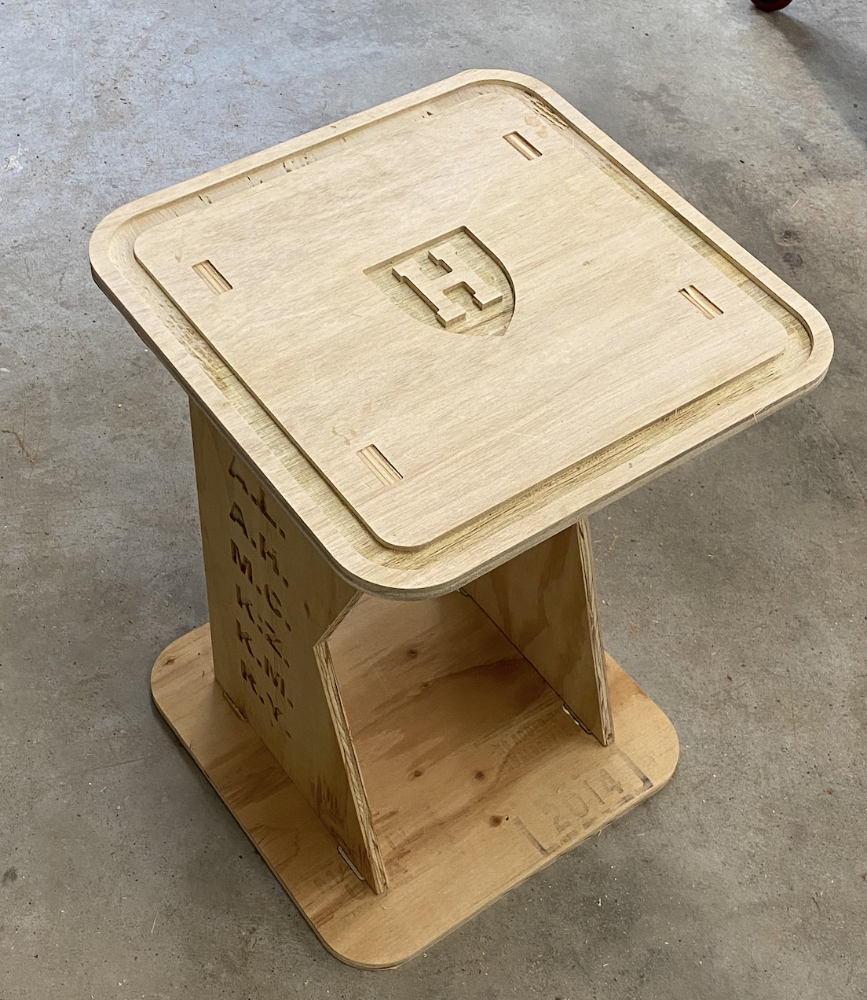
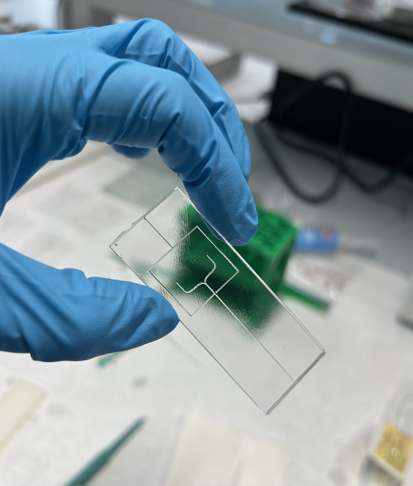
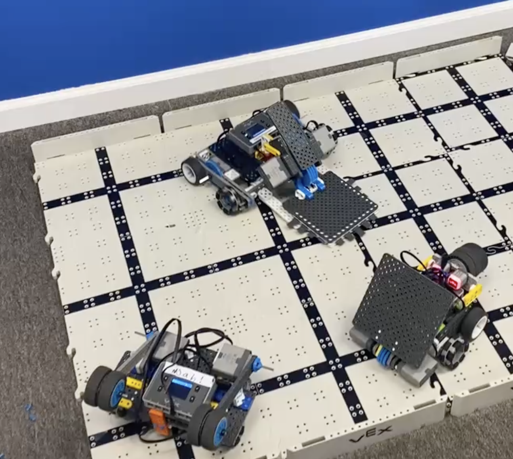
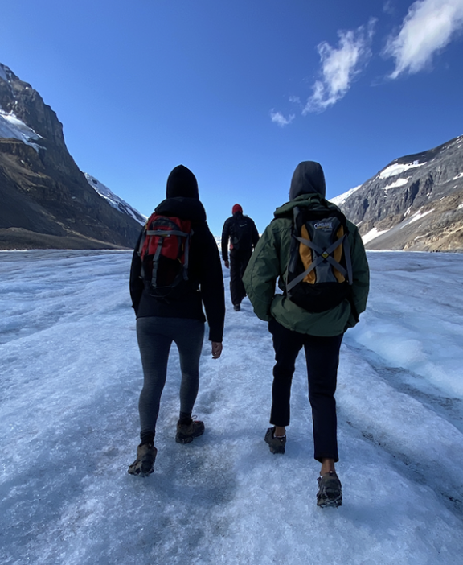
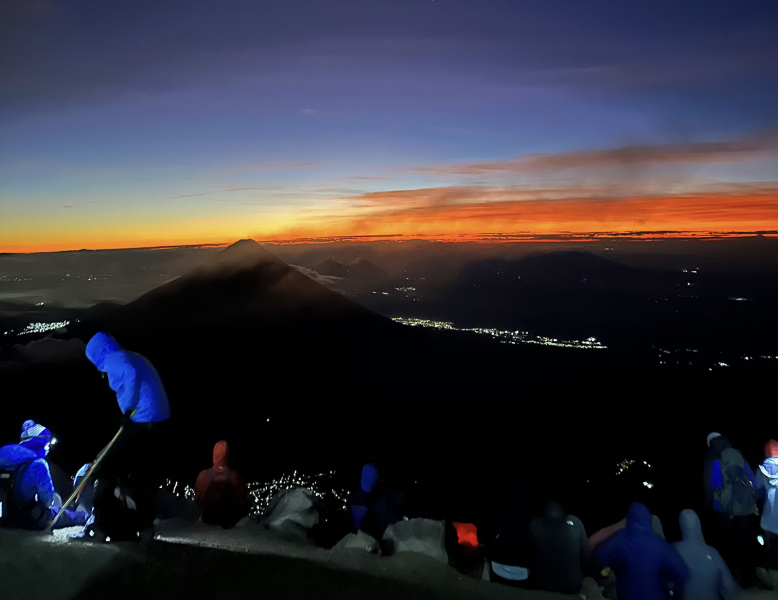
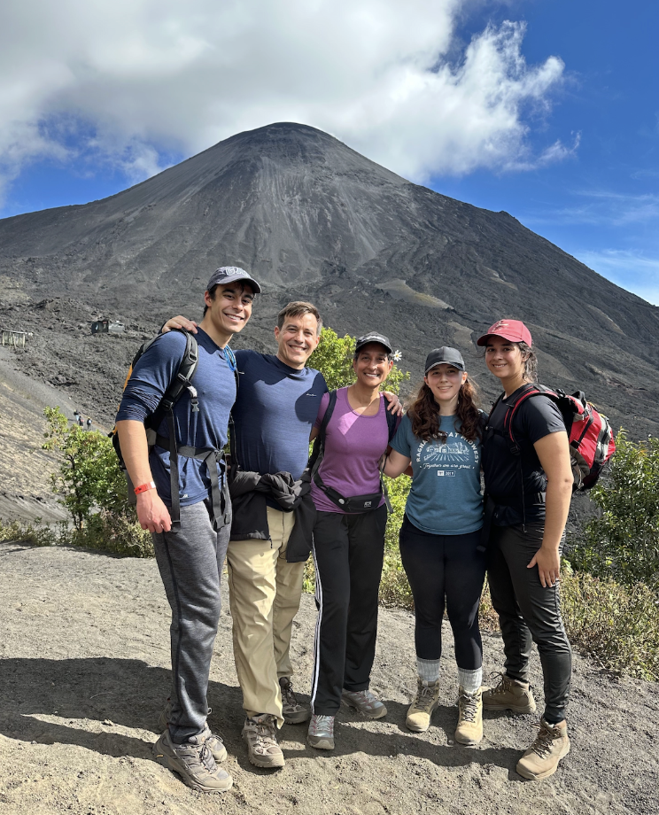
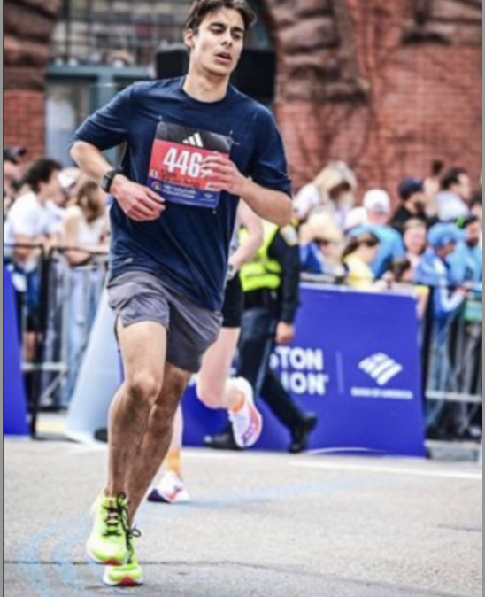

As a fourth-year student at Harvard University, I am pursuing a Bachelors of Science in Electrical Engineering while making use of Harvard's academic breadth to develop a wide range of skills in mechanical enigneering, chemistry, physics, and computer science. I am particularly interested in the applications of engineering in medicine and robotics. I believe that designing smart and affordable medical devices will democratize healthcare by putting timely medicial information into the hands of patients. In the field of robotics, I am interested in building electrical and optical interfaces that allow robots to more easily interact with the world.
Building is my chosen form of creative expression and I have supplemented my classwork with personal projects, many of which are reflected in this portoflio. Throughout my classes and projects, I have developed a wide range of complementary skills. I have learned to design and model mechanical and electrical systems, to build setups that will rigorously and meaningfully test my designs, and to use advanced design tools. I have worked on engineering design teams, in fast-paced startup environments, and in research settings.
Outside of my studies, I find balance through sports, particularly long-distance running — I am currently training for my third marathon. Marathons allow me to push my limits, build displine, and make incremenetal progress — qualities which naturally carry over into my engineering projects.
I am ready to put what I have learned into practice, to deepen my knowledge, and to contribute concretely to innovative engineering projects.

Building a small air conditioning unit for my dorm room using 3D printed components and copper tubing.

A table I designed in Fusion 360 and built using a CNC router, with the initials of my roomates engraved.

A microfluidic device I designed in Fusion 360 to encapsulate single cells in oil bubbles.

A robot battle from a summer camp I taught at teaching middle and high schoolers the principles of robotics.
As part of a diplomatic family, I have lived in seven different countries: India, Bolivia, Colombia, the U.S., Singapore, Canada, and Guatemala. Below are some pictures of hikes I have done around the world. I ran cross country and track all four years of high school and have become interested in marathon running in college. As a freshman at Harvard, I qualified for and ran in the Boston Marathon.

Hiking the Athabasca Glacier in Banff National Park with my family.

Sunrise on top of the Acatenango volcano in Guatemala.

Me and my family at the Pacaya volcano in Guatemala.

Running the Boston Marathon as a freshman at Harvard.